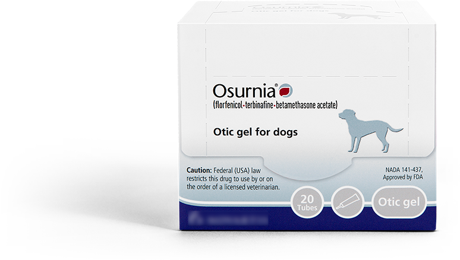
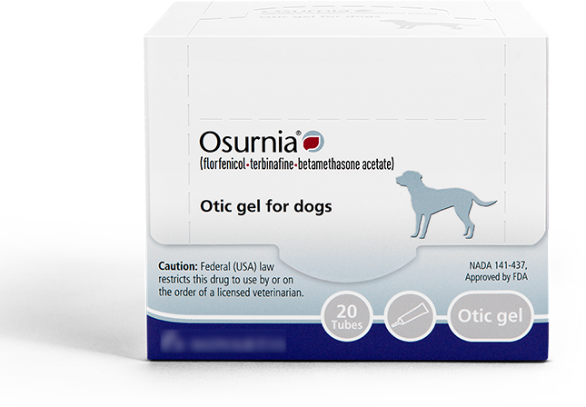

Gel formula for dogs, innovative solution for owners.
OSURNIA® (florfenicol/terbinafine/
betamethasone acetate):
*OSURNIA is indicated for the treatment of otitis externa in dogs associated with susceptible strains of bacteria (Staphylococcus pseudintermedius) and yeast (Malassezia pachydermatis).
signs & symptoms
Ear infections shouldn't be a head scratcher.
Foul smell or discharge from the ears.
Ear scratching and/or head shaking.
Crusted or scabby skin under the ear flap.
Swelling or redness around the ear.
Reluctance to having ear touched.
Dog years are too short for recurring ear infections.
The majority of dogs prescribed ear infection treatments have a recurrent history.1 While certain breeds may be more prone to infections;2 an underlying condition such as canine allergies could be present. Ear infections will persist if left untreated. Ask your veterinarian about the possibility of allergies in your dog.
ask your veterinarian
Quit chasing tails.
If your dog has experienced the symptoms above, he or she may have an ear infection. Ask your veterinarian about treating it with OSURNIA® (florfenicol/terbinafine/ betamethasone acetate).
Known infections
◆
Infections per year
◆
Signs & symptoms
◆
Gets more infections in
For veterinarians
Innovative otitis externa treatment with long-lasting efficacy.
 Key Benefits:
Key Features:
See our gel formulation at work:

Important safety information
OSURNIA® (florfenicol/terbinafine/betamethasone acetate) is for otic use only under veterinary supervision. Do not use in dogs with known tympanic perforation or a hypersensitivity to florfenicol, terbinafine or corticosteroids. Adverse reactions observed during clinical trials include vomiting, increased liver enzymes and transient loss of hearing. See OSURNIA product label for full prescribing information or call 1-888-545-5973.
Known infections
◆
Infections per year
◆
Signs & symptoms
◆
Gets more infections in